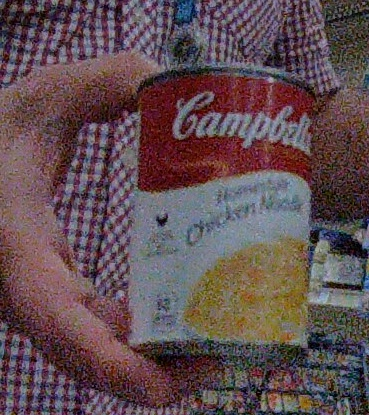

A Transferable Variant Signal That Grocery Retrieval Cannot Reach
Artificial Intelligence Program, University of the Philippines Diliman
 Creamy Tomato
Creamy Tomato
Chicken NoodleWhat is subspace transfer?
When two soup cans share a brand, much of their packaging looks the same. We take the differences between variants of brands we know and learn a set of directions in the image embedding. Those directions span a subspace. Transfer asks whether the same directions help match a photo from a new brand to its description.
One point per variant
Each small dot is a photo of a product from a seen brand. Averaging the normalized image features gives one point per variant. Several photos of a single flavor now have one center.
Try it on a held-out brand
Starbucks was held out on the paper’s tenth draw. Pick a coffee and a store photo, then switch the training labels. Your browser takes the projected photo and text embeddings from this draw and ranks the descriptions by cosine.

Ranked descriptions
At rank 64, the true-variant fit puts Sumatra first for this photo.
- Sumatra 0.4415
- Breakfast Blend 0.4398
- Pike Place 0.4091
Read the top catalog description
The product is a white bag of Starbucks Sumatra coffee featuring a green logo and a dark label with gold text.
On these 30 photos, the rank-64 fit retrieves the correct coffee within Starbucks 29 times. The shuffled fit shown here gets 16 right. This was the strongest within-brand example in our selection.
What transfers across brands?
A fair control keeps the brand and the number of photos per variant, then shuffles the variant labels within each training brand. The true labels do better on all nine backbones on average over ten draws. The full embedding still gives the highest retrieval score in the rank sweep below.
| Representation | Recall@1 ↑ |
|---|---|
| Subspace from true variants | 51.7% |
| Subspace from shuffled labels | 38.1% |
| Random subspace | 8.8% |
| Full frozen embedding | 73.6% |
At rank 64, true labels gain 13.6 percentage points over shuffled labels on SigLIP2-gopt-384. Restricting the catalog to each photo’s own brand reduces that gain to 3.9 points.
What happens when we fine-tune?
On the broader test set, a linear map reaches 98.9% Recall@1 on seen brands and falls to 58.3% on unseen brands. Fine-tuning the image tower helps unseen brands at the lower learning rate. ProxyNCA improves on the frozen tower at both rates.
| Image model | Learning rate | Seen brands Recall@1 ↑ | Unseen brands Recall@1 ↑ |
|---|---|---|---|
| Frozen SigLIP2 | — | 81.3% | 78.7% |
| Linear map (GA) | — | 98.9% | 58.3% |
| Full fine-tuning | 5 × 10−5 | 99.6% | 72.1% |
| Full fine-tuning | 2 × 10−5 | 98.1% | 83.9% |
| ProxyNCA | 5 × 10−5 | 90.5% | 84.5% |
| ProxyNCA | 2 × 10−5 | 89.9% | 87.6% |
The paper reports the full method comparison and the learning-rate selection protocol. Download the table (CSV)
Abstract
Stores use contrastive vision-language models (VLMs) to match in-store product photos to a text catalog, and these models often confuse variants of one brand. The usual explanation is that contrastive image features lack fine detail. We test it on the GroceryVision benchmark. Cosine retrieval with frozen SigLIP2 features reaches 81.3% Recall@1, while a linear probe on the same features identifies the variant with 97.1% balanced accuracy on seen brands and 92.5% on brands withheld from training when retrained on their labels. A linear map trained on seen brands raises Recall@1 on those brands to 98.9% but lowers it on unseen brands to 58.3%. A variant subspace fit on seen brands does transfer to unseen brands and outperforms a shuffled-label control by 5.9 to 20.4 pp on nine backbones. Over ten draws on two backbones, most of this margin comes from telling brands apart. With brands held out of training, fine-tuning falls below the frozen model at the default learning rate and rises above it at a lower one. ProxyNCA stays above the frozen model at both rates. The image features carry the variant, and the error lies in how cosine retrieval matches them to text. Code is available in OpenMPR.
Citation
@inproceedings{maminta2026variant,
title = {A Transferable Variant Signal That Grocery Retrieval Cannot Reach},
author = {Maminta, Emmanuel G. and Atienza, Rowel O.},
booktitle = {Proceedings of the Asian Conference on Computer Vision (ACCV)},
year = {2026}
}